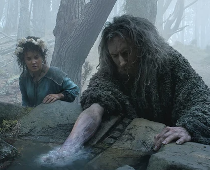

Explora la Tierra Media
Sumérgete en la épica historia de los Anillos de Poder, donde la lucha entre la luz y la oscuridad define el destino de todos.
Ver trailer


Los 20 Anillos de Poder y su Propósito
Los Tres Anillos Élficos
- Vilya (Anillo del Aire, azul): Gil-Galad → Elrond.
- Narya (Anillo del Fuego, rojo): Círdan → Gandalf.
- Nenya (Anillo del Agua, blanco): Galadriel.
Destinados a preservar belleza y sabiduría.
Los Siete Anillos de los Enanos
- Otorgados a los líderes de siete clanes.
- Aumentaban riqueza pero intensificaban avaricia.
- Resistieron la corrupción pero casi todos fueron destruidos.
Los Nueve Anillos de los Hombres
- Dieron poder y longevidad a reyes humanos.
- Los transformaron en Nazgûl, sirvientes de Sauron.
- Perdieron su voluntad y quedaron esclavizados.
El Anillo Único
- Forjado por Sauron en el Monte del Destino.
- Contenía parte de su poder para dominar los otros anillos.
- Su propósito: someter a toda la Tierra Media bajo su voluntad.
Personajes principales

Galadriel
Galadriel es una de las protagonistas principales de la serie Los Anillos del Poder. Se la presenta como una guerrera decidida y obsesionada con erradicar el mal. Las historias relacionadas con ella en la serie son buscar a Sauron, su relacion con Halbrand y la creacion de los Tres Anillos Élficos, de los cuales se apropiaria de Nenya, uno de esos tres anillos.

Extraño
El Extraño en Los Anillos de Poder El Extraño (The Stranger) es un personaje misterioso que aparece en la primera temporada de The Rings of Power. Llega a la Tierra Media a través de un meteorito en un evento enigmático que deja a los espectadores con muchas preguntas sobre su verdadera identidad. Desde su llegada, el Extraño muestra habilidades mágicas poderosas pero incontroladas. No recuerda quién es ni de dónde viene, y es encontrado por los pelosos (ancestros de los hobbits), en particular por Nori Brandyfoot, quien lo ayuda y lo guía en su travesía.

Halbrand
Halbrand es un personaje presentado inicialmente como un misterioso hombre del Sur con un pasado turbulento. Sin embargo, a lo largo de la serie, su verdadera identidad y propósito se van revelando, convirtiéndolo en uno de los personajes más impactantes de la historia. Tras traicionar a Galadriel, Halbrand se convierte en Annatar y va con Celebrimbor a engañarlo para que haga los Anillos de Poder para que así se cumpla el plan de Annatar, el cual en verdad es Sauron.
Lugares Icónicos de la Tierra Media
Explora algunos de los escenarios más memorables de la saga.

Rivendel
El refugio de los elfos, conocido por su belleza y sabiduría eterna.

Mordor
La oscura tierra donde se forjó el Anillo Único.

La Comarca
El hogar de los Hobbits, lleno de paz y sencillez.
Curiosidades de los Anillos de Poder
Descubre algunos datos fascinantes sobre el universo creado por Tolkien.
- ¿Sabías que? Los tres anillos élficos nunca fueron tocados por Sauron.
- Interesante: El Anillo Único solo tiene inscripciones visibles cuando se calienta.
- Dato curioso: El idioma de Mordor fue creado especialmente para el Anillo Único.
- Sorpresa: El personaje de Gandalf usó Narya, el anillo de fuego, para inspirar valor.